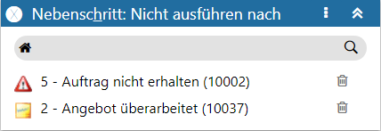
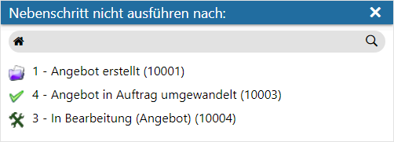

Definitionsbereich - Nebenschritt: Nicht ausführen nach
Handelt es sich um einen Nebenschritt, so kann über diesen Bereich definiert werden (in Form einer Negativliste), nach welchen Schritten der gewählte Nebenschritt nicht ausgeführt werden darf.
Hinweis
Bei dem Aufbau der Negativliste ist zu beachten, dass bei der Prüfung auf den "letzten" Schritt im CRM-Fall ggfs. gesetzte Nebenschritte nicht berücksichtigt werden (Nebenschritte verändern den Status des Falles nicht). D.h. ein Ausschließen der Ausführung eines Nebenschrittes nach sich selbst ist nicht erforderlich und daher auch nicht möglich.

Ø Kopfzeile
In der Kopfzeile des Bereichs wird die Bezeichnung "Nebenschritt: Nicht ausführen nach" angezeigt.
Ø  Menü
Menü
Durch Anwahl des Menüs werden weitere Funktionen zur Verfügung gestellt:
ü Maximieren / Minimieren
Bei
einem Maximieren wird die Negativliste als einziger Bereich in der Definition
angezeigt, bzw. bei einem Minimieren wieder alle Bereiche in der Definition.
Hinweis
Über die Tastenkombination ALT + H kann der Bereich direkt maximiert bzw. minimiert werden.
ü Neu
Mit Hilfe dieser Auswahl
können neue Start-, Workflow- und Endschritte in die Negativliste aufgenommen
werden.
Hierfür öffnet sich zunächst das Fenster "Nebenschritte nicht
ausführen nach:", in welchem alle noch nicht in der Liste aufgeführten Schritte
des Workflows zur Verfügung aufgeführt werden.

Durch Auswahl der Schritte werden diese in die Negativliste übernommen.
Hinweis
Wurde der Bereich "Nebenschritt: Nicht ausführen nach" maximiert, so können neue Schritte über die Tastenkombination ALT + N direkt hinzugeführt werden.
Ø Tabelle
In der Tabelle werden all jene Schritte aufgeführt, nach denen das Ausführen des Nebenschritts nicht gewünscht ist.
Ø  Löschen
Löschen
Durch Anwahl dieses Tabellenbuttons wird der Schritt aus der Tabelle entfernt.